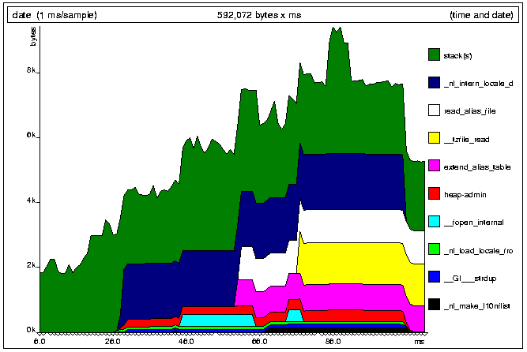

--tool=massif
on the Valgrind command line.
But the story is different for heap profilers. Some programming languages, particularly lazy functional languages like Haskell, have quite sophisticated heap profilers. But there are few tools as powerful for profiling C and C++ programs.
Why is this? Maybe it's because C and C++ programmers must think that
they know where the memory is being allocated. After all, you can see all the
calls to malloc() and new and new[],
right? But, in a big program, do you really know which heap allocations are
being executed, how many times, and how large each allocation is? Can you give
even a vague estimate of the memory footprint for your program? Do you know
this for all the libraries your program uses? What about administration bytes
required by the heap allocator to track heap blocks -- have you thought about
them? What about the stack? If you are unsure about any of these things,
maybe you should think about heap profiling.
Massif can tell you these things.
Or maybe it's because it's relatively easy to add basic heap profiling functionality into a program, to tell you how many bytes you have allocated for certain objects, or similar. But this information might only be simple like total counts for the whole program's execution. What about space usage at different points in the program's execution, for example? And reimplementing heap profiling code for each project is a pain.
Massif can save you this effort.
-g flag). But, as opposed to Memcheck,
you probably do want to turn optimisation on, since you should profile
your program as it will be normally run.
Then, run your program with valgrind --tool=massif in front of the
normal command line invocation. When the program finishes, Massif will print
summary space statistics. It also creates a graph representing the program's
heap usage in a file called massif.pid.ps, which can
be read by any PostScript viewer, such as Ghostview.
It also puts detailed information about heap consumption in a file file
massif.pid.txt (text format) or
massif.pid.html (HTML format), where
pid is the program's process id.
prog,
type:
valgrind --tool=massif prog
The program will execute (slowly). Upon completion, summary statistics that look like this will be printed:
==27519== Total spacetime: 2,258,106 ms.B ==27519== heap: 24.0% ==27519== heap admin: 2.2% ==27519== stack(s): 73.7%All measurements are done in spacetime, i.e. space (in bytes) multiplied by time (in milliseconds). Note that because Massif slows a program down a lot, the actual spacetime figure is fairly meaningless; it's the relative values that are interesting.
Which entries you see in the breakdown depends on the command line options given. The above example measures all the possible parts of memory:
malloc(),
new and new[].
massif.pid.hp.
It will produce a file called massif.pid.ps, which can be
viewed in a PostScript viewer.
Massif uses a program called hp2ps to convert the raw data into
the PostScript graph. It's distributed with Massif, but came originally
from the Glasgow Haskell
Compiler. You shouldn't need to worry about this at all. However, if
the graph creation fails for any reason, Massif tell you, and will leave
behind a file named massif.pid.hp, containing the raw
heap profiling data.
Here's an example graph:

The graph is broken into several bands. Most bands represent a single line of your program that does some heap allocation; each such band represents all the allocations and deallocations done from that line. Up to twenty bands are shown; less significant allocation sites are merged into "other" and/or "OTHER" bands. The accompanying text/HTML file produced by Massif has more detail about these heap allocation bands. Then there are single bands for the stack(s) and heap admin bytes.
Note: it's the height of a band that's important. Don't let the ups and downs
caused by other bands confuse you. For example, the
read_alias_file band in the example has the same height all the
time it's in existence.
The triangles on the x-axis show each point at which a memory census was taken. These aren't necessarily evenly spread; Massif only takes a census when memory is allocated or deallocated. The time on the x-axis is wallclock time, which is not ideal because you can get different graphs for different executions of the same program, due to random OS delays. But it's not too bad, and it becomes less of a problem the longer a program runs.
Massif takes censuses at an appropriate timescale; censuses take place less frequently as the program runs for longer. There is no point having more than 100-200 censuses on a single graph.
The graphs give a good overview of where your program's space use comes from, and how that varies over time. The accompanying text/HTML file gives a lot more information about heap use.
Here's part of the information that accompanies the above graph.
Called from:
-g, actual line numbers would be given). These
places are sorted, from most significant to least, and correspond to the bands
seen in the graph. Insignificant sites (accounting for less than 0.5% of total
spacetime) are omitted.
That alone can be useful, but often isn't enough. What if one of these
functions was called from several different places in the program? Which one
of these is responsible for most of the memory used? For
_nl_intern_locale_data(), this question is answered by clicking on
the 22.1% link, which takes us to the following part
of the file.
== 1 ===========================
Context accounted for 22.1% of measured spacetime
0x401767D0: _nl_intern_locale_data (in /lib/i686/libc-2.3.2.so)
Called from:
_nl_load_locale_from_archive() was called such that it allocated
memory at 0x401767D0. (We can click on the top 22.1%
link to go back to the parent entry.) At this level, we have moved beyond the
information presented in the graph. In this case, it is only called from one
place. We can again follow the link for more detail, moving to the following
part of the file.
== 2 ===========================
Context accounted for 22.1% of measured spacetime
0x401767D0: _nl_intern_locale_data (in /lib/i686/libc-2.3.2.so)
0x40176F95: _nl_load_locale_from_archive (in /lib/i686/libc-2.3.2.so)
Called from:
--depth value if we wanted more information.
Sometimes you will get a code location like this:
Massif produces this information in a plain text file by default, or HTML with
the --format=html option. The plain text version obviously
doesn't have the links, but a similar effect can be achieved by searching on
the code addresses. (In Vim, the '*' and '#' searches are ideal for this.)
--heap=no--heap=yes [default]massif.pid.txt or
massif.pid.html will be very short.
--heap-admin=n [default: 8]glibc requires somewhere between 4--15 bytes per block,
depending on various factors. It also requires admin space for freed
blocks, although Massif does not count this.
--stacks=no--stacks=yes [default]
--depth=n [default: 3].txt/.hp file.
--alloc-fn=namemalloc(), which can fill up the context
information uselessly (and give very uninformative bands on the graph).
Functions specified will be ignored in contexts, i.e. treated as though
they were malloc(). This option can be specified multiple
times on the command line, to name multiple functions.
--format=text [default]--format=html.txt or .html.
The heap admin spacetime figure is an approximation, as described above. If anyone knows how to improve its accuracy, please let us know.